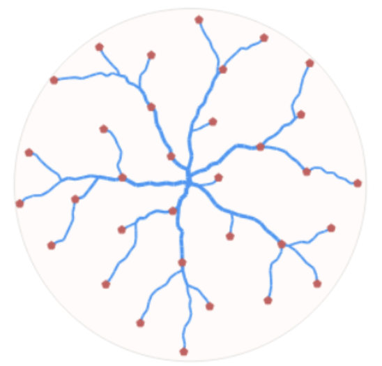

Vascular flows
Inferring the interplay of flows and development in the avian yolk sac
The Biological Transport Networks Group employs theoretical and computational approaches to uncover the principles governing the development, organization, and function of biological transport systems. We study how architectures such as vascular and neuronal networks emerge under physical and developmental constraints and how their structure shapes transport efficiency and adaptability. By integrating modeling with experimental data across scales, we aim to identify unifying principles that connect local dynamics to organism-level organization and function.
Inferring the interplay of flows and development in the avian yolk sac

Linking discrete and continuum representations of transport

Constructing and de-constructing neurons

Unraveling the topology of the chorionic vasculature